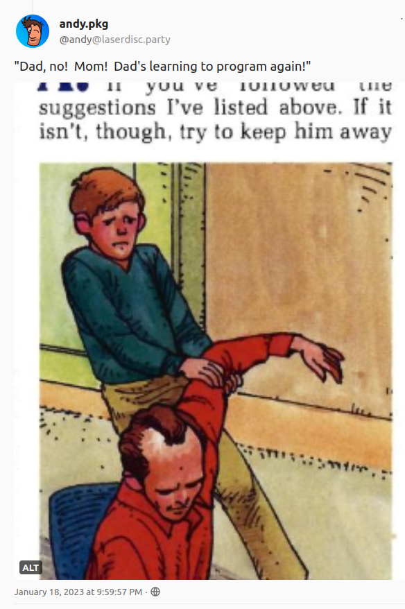
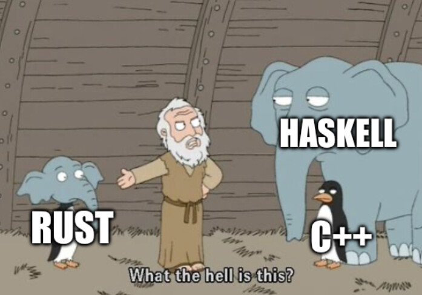

Rust is not the greatest language for implementing lisp interpreter. First, lisp uses the cons linked lists for everything, while implementing them is notoriously hard in Rust. Second, Rust does not have a garbage collector, while lisp does, so we need to implement some kind of memory management mechanism by ourselves. On the good side, Rust’s pattern matching and strong type system are quite helpful for the problem.
When I started I didn’t have any experience with Rust. I’ve read the Programming Rust: Fast, Safe Systems Development book by Jim Blandy, Jason Orendorff, and Leonora F . S. Tindall and it was quite helpful. I’ve also skimmed through The Rust Programming Language by Steve Klabnik and Carol Nichols and used it as a reference. I also found the official documentation very useful.

First step: the parser
Creating the parser went quite smoothly. I decided to create the Reader trait for reading individual characters from different sources (strings for unit tests, files, stdin) that would be used by the read_sexpr function for reading the S-expressions.
pub trait Reader {
fn peek(&mut self) -> Result<char, ReadError>;
fn next(&mut self) -> Result<char, ReadError>;
}To implement it, I used match for pattern matching and it worked very nicely. It felt the same as good old pattern matching in functional programming languages.
Getting stuck for the first time: linked list
After being able to parse the atomic types, I was to add support for the lists. I tried and failed. I searched all the internet and saw the re-occurring advice: “don’t”. They gave many good arguments, but I needed the lists for my lisp. Then, I found a book that focuses only on implementing linked lists in Rust showing six (wat!?) different implementations. I borrowed from it the one from the chapter four because I needed an immutable list, that supports head (car) and tail (cdr) operations and makes them efficient. This finally worked.
Since Rust does not allow for sharing a value in different places, the linked list implementation used Rc a smart pointer that allows for read-only re-using of a variable by using a reference counter. It serves as a very simple garbage collector.
Types
Working on the parser and defining the types for my lisp was a chance to learn about Rust’s type system. I was positively surprised by the enum type that fitted great for the purpose. It supports all the possible kinds of data as variants (no data, atomic types, structs, tuples, call it).
#[derive(Clone)]
pub enum Sexpr {
True,
False,
Symbol(String),
Integer(i64),
Float(f64),
String(String),
Quote(Box<Sexpr>),
List(List<Sexpr>),
// [...]
}The tricky part is that Rust needs to know about the size of the memory needed for the data at compilation time, so recursive types like Quote or List that can contain other Sexprs need to be packed in a Box, a smart pointer provided in the standard library to wrap around values for exactly such purposes. The memory footprint of Box is the size of the pointer.
Pleasant surprise: the traits and #[derive()]
For my variables, I didn’t only want to store them. I needed to do things like copying, printing or comparing them. Did I need to implement all those things? No, Rust is smart enough to do it. I only added the #[derive()] statement to it. For example, to be able to compare if two lists are the same, I derived the PartialEq trait, to copy the Clone trait and Debug trait for pretty printing when debugging and unit testing. If all the elements of the list follow those traits, and the list derives them, it is enough for it to work without any additional code.
#[derive(PartialEq, Debug, Clone)]
pub struct List<T> {
head: MaybePair<T>,
}There are also traits that I implemented myself, like Display to print the values, Iter to iterate over the elements of the lists, From<T> to convert from the type T into the type that implements it, etc.
In fact, #[derive()] has saved my implementation. Initially, I implemented List::clone myself in a very inefficient way by doing a deep copy. It was completely unnecessary and when I noticed my mistake, I removed the implementation and replaced it with one line: #[derive(Clone)]. Without it, clone was working in \(O(n)\) time, after it \(O(1)\)1. Before, the code was extremely slow, and after, very fast.
Second step: the environments
Environments are similar to linked lists in the sense that closures are linked to the enclosing environments. When you call
(let ((x 1))
(+ x y))it reads x from the local environment created by let and because y is not available there, it seeks for it in the environment enclosing the call, all the way down till it hits the root environment. The difference between lists and environments is that environments are tree-like structures (multiple environments can have the same parent), each environment is a mapping (here a HashMap), and we need read and write access to them.
Rc, which I used in lists, does not allow for writing, so additionally I used RefCell that permits mutable borrowing of the values. There are several other constructs like this (e.g. Mutex), but I needed my interpreter to run single-threaded, so the simple RefCell sounded good enough and would likely be more efficient. The final implementation was defined in terms of a recursive data structure:
#[derive(Debug, PartialEq, Clone)]
pub struct Env<T>(Option<Rc<RefCell<EnvContainer<T>>>>);
#[derive(Debug, PartialEq)]
struct EnvContainer<T> {
local: HashMap<String, T>,
parent: Env<T>,
}To avoid circular dependencies between the modules, I defined it as a generic Env<T>, using it in the code as Env<Sexpr>.
It is a nice example of how Rust encourages to use of its standard library which provides a lot of useful constructs that nicely work together. Option<Rc<RefCell<EnvContainer<T>>>> means that we use the Option monad (yes, Rust ❤️ monads) for a nullable type (the root environment does not inherit from anything), Rc for re-using the contained values, RefCell for mutable borrowing, and on the bottom, the EnvContainer<T> that holds the HashMap with the local variable bindings and the link to the enclosing environment. Maybe it doesn’t look pretty, but all the constructs that made it work were provided to us in the standard library. So far, my impression of using Rust is that it’s mostly about being able to make use of the standard library. This is to a much larger degree than in the case of any other programming language I know.
The example also highlights the major difference between Go and Rust. Till recently, Go didn’t have generics and what it has now is rather limited. On another hand, Rust uses generics a lot. Even for a rather simple problem I was solving, generics a few times helped me to improve and declutter the code.
Third step: the evaluator
The evaluator didn’t seem hard to write. I started with something like below.
match sexpr {
Sexpr::Symbol(name) => {
return env.get(&name).ok_or(Error::NotFound(name))
},
Sexpr::Quote(ref quoted) => return Ok(*quoted.clone()),
Sexpr::List(ref list) => return eval_list(list, &mut env),
_ => return Ok(sexpr)
}Notice a few things: I used here the Result monad (yes, again) for handling errors. It makes use of the operations provided in the standard library, including .ok_or(err) that translate the Option::Some result to Resul::Ok and Option::None to Result::Err for the given error message. That’s a nice use of monads. For Quote I needed to unbox the quoted value by dereferencing it with *. In some places, I needed to .clone() the values (recall, Rust does not allow us to re-use them).
It seemed to work, but only till I learned that Rust is not tail-call optimized. The recursion used everywhere in Scheme resulted in many stack overflow errors. I needed to implement the tail-call optimization for my interpreter. Hopefully, it’s less fancy than it sounds (check the source code, or this link if you’re curious).
Fourth Step: the Scheme procedures
For it to be a programming language, I needed not only the data types but also the (minimal) set of basic procedures. Here came a surprise. While the lisp data resides in linked lists, we would usually iterate through it by accessing the lists’ head and tail (recursively if needed). This is what most functional programming languages would do, but not Rust. The idiomatic way in Rust seems to be using the iterator. For it, we need to implement the Iter trait, by providing the .next() method. It would give us for free many other methods like map, filter, collect, etc. However, it was not only about “nicer” code, but rather simplified it by enabling me to use many utilities from the standard library (told you so).
In Rusts iterator, .next() returns the Option monad: Some(element) result when the element exists and None if we already iterated through all the available elements. The pattern that I repeated many times when implementing Scheme procedures was sexprs.iter().map(|elem| eval(elem, env)), where sexprs is the list of S-expressions List<Sexpr>. In such a case .next() would return Option<Result<Sexpr, Error<Sexpr>>>, the Option nested in Result. Unpacking both was clumsy. Moreover, I wanted the iterator to stop on error. This lead me to come up with my iterator that stops on an error and saves the error message, otherwise returning the Option<Sexpr> results. When calling its .next() method, I call the self.inter.next() from the inner iterator and unpack it.
fn next(&mut self) -> Option<Self::Item> {
debug_assert!(self.err.is_none());
match self.iter.next()? {
Ok(result) => Some(result),
err => {
self.err = Some(err);
None
}
}
}Returning None marks that it was the final iteration. If you wonder what is the small ? in the third line, it’s another cool feature of Rust. It’s a syntax that tells it to unpack the value contained in Option or Result and propagate the None value or error, so you don’t need to write the boilerplate by yourself. How cool is that?
The above helped me to write procedures like list with iterators, in just a few lines of code. The example below shows an iterator that goes through all the args evaluating them, then collects the results to a lisp list List<Sexpr> (thanks to the fact that I already implemented the FromIterator trait for List<T>). In the end, I need to check if an error was raised by looking if iter.err() is not empty, then either raise it or return the result.
fn list(args: &Args, env: &mut Env) -> FuncResult {
let iter = &mut eval_iter(args, env);
let list: List<Sexpr> = iter.collect();
match iter.err() {
Some(Err(msg)) => Err(msg),
_ => Ok(Sexpr::List(list)),
}
}Getting stuck again: reading lines from a file (?!)
All the unit tests passed. It was finally time for an integration test. This meant that I needed not only to evaluate single-line code inputs but also whole files. The next step was to build a REPL. I assumed that doing both would be simple: I would read a line from a file, or standard input, and pass it to StringReader that I already had for reading from strings. The file could be processed line-by-line, for REPL I would be prompting the user for new lines. Easy peasy, I thought. But no, it wasn’t. If I read a line it is saved to a temporary variable, Rust does not allow preserving a state that would depend on such a temporary variable. I was struggling a bit, trying to add lifetimes, etc but with no luck. The solution was to clone all the characters from the string so the state can take ownership of them. Sounds easy when you know it. Now the reader when asked for a new character returns it from the cache, but when the cache is empty, it fills it with the new line.
fn next(&mut self) -> Result<char, ReadError> {
loop {
match self.iter.next() {
Err(ReadError::EndOfInput) => {
self.iter = FileReader::next_line(&mut self.lines)?
},
result => return result,
}
}
}Conclusion
And here it is! As with my other implementations, I tested the code by running the examples from The Little Schemer book. I also ran benchmarks, and the Rust interpreter is faster than the one written in Go and slightly slower than the OCaml one (the fastest). Not bad.
It was a great learning opportunity. I started with book knowledge of Rust and ended up with hands-on experience with most of the core Rust concepts. It was hard. When writing a minimal lisp interpreter for the first time (in Go), the biggest problem was that I needed to learn a lot about the Scheme language and its internals. In Rust, I was struggling with the language. The learning curve is steep. Rust is built on many concepts that are not present elsewhere (e.g. borrowing). It is also deceitfully similar to many functional programming languages while being a much lower-level language. Programming in Rust is like using Haskell, with its types and strictness, but without recursion, and where you need to manage all the memory by yourself.

Did I like it? Kind of. It has many great features. On another hand, to use it, you need to learn a lot about the language. With other programming languages, I use documentation to check some specific topics. In Rust, I had many tabs with the documentation for the standard library open constantly (“was it ok_or, or maybe ok_or_else, or maybe unwrap_or..?”). It’s also very verbose (I needed 1.4k lines of code vs 500 in OCaml or 600 in Lua).
On another hand, Rust’s compiler nitpicks a lot but also gives very informative messages and hints. Moreover, there is the Clippy linter that told me exactly what and where should I change to make my code more idiomatic and how to simplify it. Rust is a (memory) safety freak, so it won’t let you create something that doesn’t work. You can do it correctly or never. I can understand why people like it. It constrains you a lot, but if you accept the constraints, Rust does many things to help you write better code.
It was fun!
Footnotes
Clone all the elements in the list vs clone the reference in the head of the list.↩︎